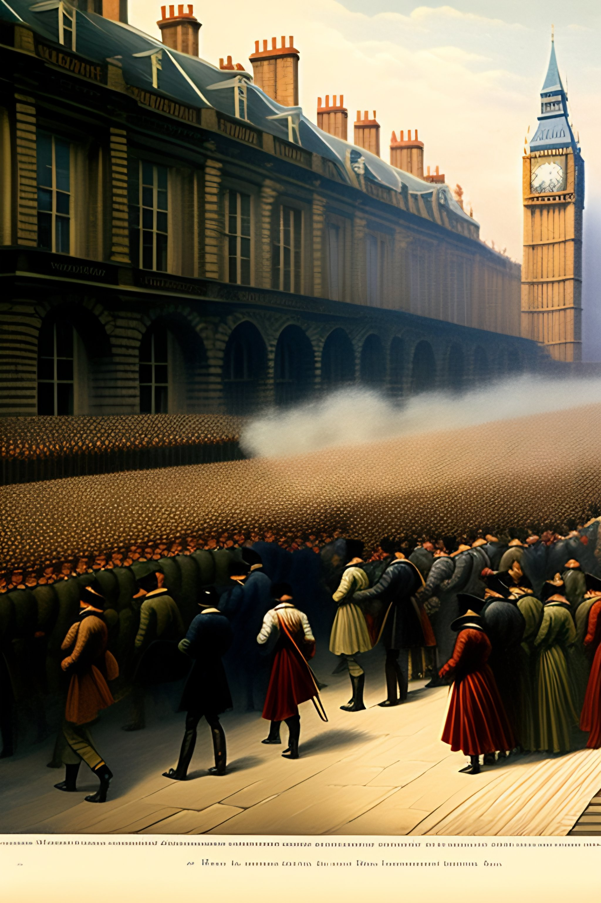
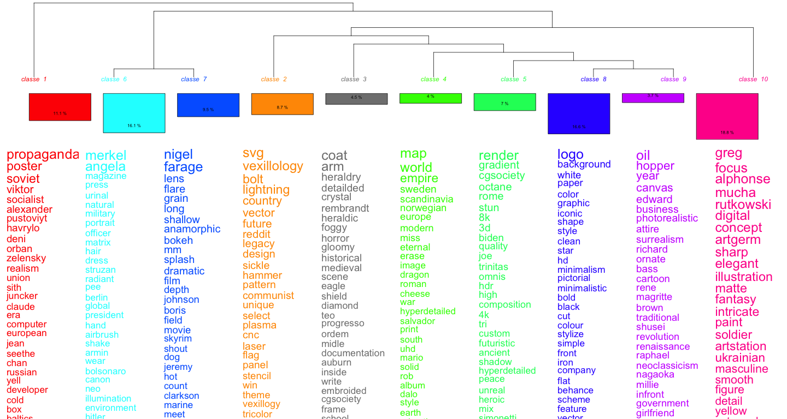

a french legionary, walking in a field, with black smoke of a fire in background

Chartist revolutionaries storming Westminster
Nalanda University in 1300 AD
« a portrait of Mr Bean as Napoléon Bonaparte »
« Napoleon bonaparte riding a shark »
« prompting the past »*
« what is digital history? an abstract painting by Vassily Kandisky »*

« who’s prompting, users or machines? »*
joe biden doing a nazi salute, in front of brandenburger tor. huge nazi crowd in front of him. face of joe biden is clearly visible. canon eos r 3, f / 1. 4, iso 1 6 0 0, 1 / 8 0 s, 8 k, raw, grainy
« digital history »*
Charles De Gaulle bronze sur une plage de Normandie*